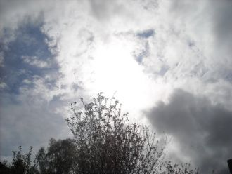

Gimme gimme, gimme just a little smile,that's all I ask of you.Gimme gimme, gimme just a little smile,we got a message for you.
В самом центре Руси, вдалеке от пространства медийного,О столичной судьбе шесть веков не пытаясь гадать,Золотых куполов, белокаменных храмов Владимира
Please, won't you wait?Won't you stay...?(At least until the sun goes down)When you're gone, I lose faithI lose everything I have found
Non chiedermi perché non sono ricco ho perso tutto ma
Вспыхнуло солнце заката. На дворе - благодать. Мир абсолютно понятен.Но тебе не понять.

Когда утихнет, что в душе болит,
Я стану серым камнем у подножья,
Мне позавидует в бесчувствии гранит
И пыльная трава на бездорожье.
В лазурной прелести небес,Там, где полным-полно чудес,Твоих свет виден глаз.И в полыхании огня,Средь нескончаемого дня,
Нельзя знать всё о том, чего не существует.Нельзя узнать всё то, чего в природе нет.Вся мудрость мира – бред, а хаос торжествует.
У Настюши День рождение,Праздник празднует дитя.В годовщину в день варенья,Кумовья пришли, родня.Будь здоровая, Настюша,
Последний поезд - вагон пустой,Я помашу тебе вслед рукой,Ты растворишься опять в кольце темноты.Черта огней по стеклу бежит,
We're riding down the boulevardWe're riding into the dark night, nightWith half the tank and empty heart
時の流れは無常であなたと私を引き離す愛を何度 叫んでも想い出だけは置き去りのまま心の闇に気付けなかった自分がいつまで経っても許せないお願い 助けて心が崩れて苦しい
What about sunriseWhat about rainWhat about all the thingsThat you said we were to gain...What about killing fieldsIs there a time
38-тай аавын минь амьд сэрүүн зүрх шигГуниг баяраар дэргэд нь амсаж өссөн голомт миньТунарч хөхрөх утааны үнэр нь нэг л өөр
Цаг агаар тэнэг халуун Хотын амьдрал нэгэн хэвийн Үргэлжилсээр, энх тайвны өргөн чөлөөӨчигдөр уусан юмны нөлөөГэнэт чи гарч ирсэн
Feeling like I'm breathing my last breathFeeling like I'm walking my last stepsLook at all of these tears I've wept
Oh the wind whistles down The cold dark street tonight And the people they were dancing to the music vibe
Никогда этих снов.Никому этих слов.Только ветер знает,Там, где я БудуНавсегда, навсегда..Посмотри - мы не одни.
1.Доьххьара хьо гича нур догу б1аьргашна, Ц1еххьана безамо ов туьхийра. Ойла д1а ийцира синтемах яьккхина, Сай дега къайленаш ас хьоьга йийцира. (2р)
Милая, как же трудно мне без тебя. Как же холодно, без улыбок твоих и тепла. Любимая, мы растратили нежность зря.